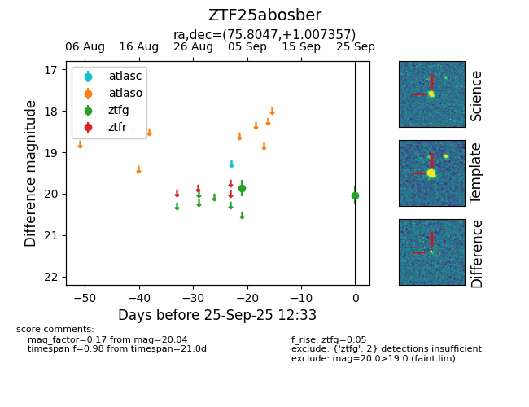

FINK: ZTF25abosber
Lasair: ZTF25abosber
ALeRCE: ZTF25abosber
ZTF25abosber (ztf,fink)
equatorial (ra, dec) = (75.8047,+1.00736)
galactic (l, b) = (198.8711,-23.37359)

last ztfg=20.04
2 ztfg detections